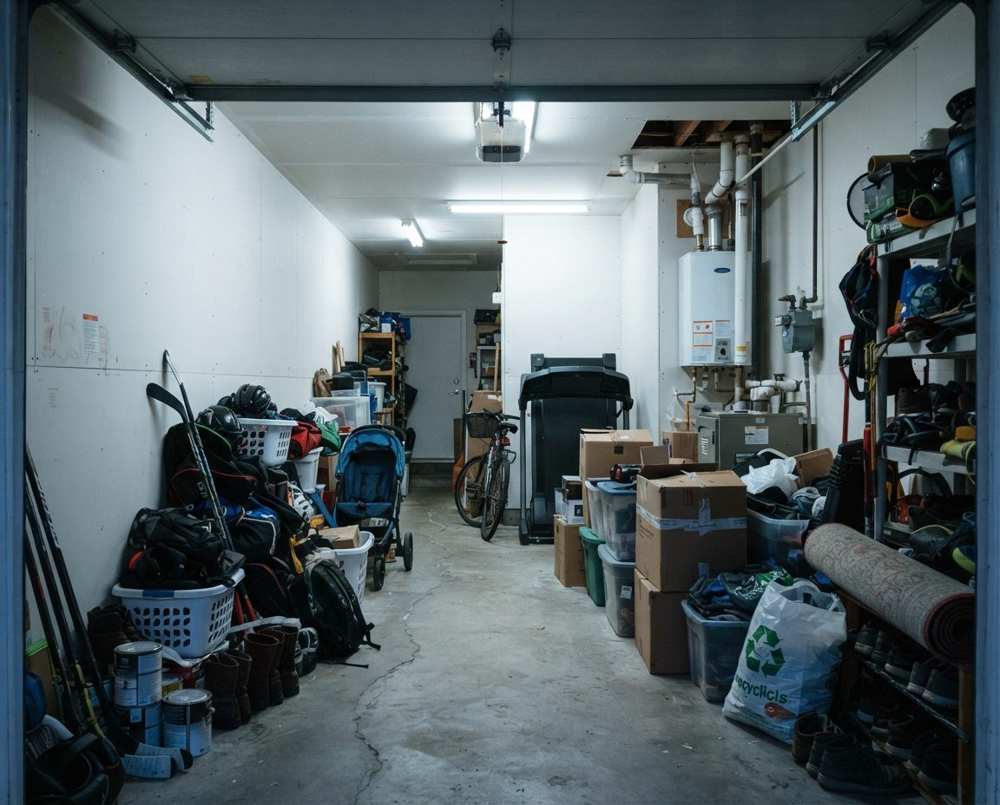

You don't need to apologise when you call, for the state of the garage, for waiting this long, or for a parent, a spouse or yourself. We clear garages for a living, and one that is full to the rafters is still a garage. What we need to know is who decides, whether there are mice, and whether a date is forcing the job.
If you'd rather say it out loud than read about it, call (587) 804-9266. The first conversation is just that, a conversation, and nobody gets booked into anything on it.
Clutter, Hoarding or Biohazard: Who Should You Call?
Three different kinds of company advertise "hoarding cleanup" in Calgary, and they do three different jobs. Picking the wrong one costs money either way: a hazmat crew in full protective gear is expensive for a garage of dusty boxes, and a junk hauler shouldn't be shovelling up sewage. Use what you can see from the doorway to decide.
| What you see | What it usually is | Who to call first |
|---|---|---|
| Boxes, tools, furniture and bags to the ceiling; a path or no path; dust and cobwebs | Heavy clutter or a hoarded garage | A cleanout crew (that's us) |
| The same, plus mouse droppings, chewed cardboard and nests | A hoarded garage with rodents | Us, working to Alberta's hantavirus steps below |
| The person gets distressed at the idea of anything leaving, or the garage refilled after the last clear-out | Possible hoarding disorder | A support program or counsellor alongside us, before the truck comes |
| Human or pet waste, sewage, needles, a dead animal bigger than a mouse, or a death on the property | A biohazard | A certified biohazard remediation company. We come in after them for the hauling if you need it |
| Sagging roof, a door that won't open, wiring that's been chewed, or a strong smell of gas | A safety problem | ATCO or your utility for gas, an electrician or contractor for the rest, then us |
If you're not sure, send three photos from the doorway to inquiry@garagescape.ca and we'll tell you honestly whether it's ours to do.
If the Garage Belongs to Someone Else
The person who calls us is often not the person whose things fill the garage. That changes how the job has to run.
A parent who still lives in the house
If they're living there and able to make their own decisions, they have to agree to the cleanup and be part of it. A garage emptied while someone is at the doctor's will feel like a theft to them, and a garage cleared that way tends to fill back up. We'll happily meet them, walk through it with them and start small: one wall, or just the path to the house door. If a family member holds power of attorney or the person is moving into care, tell us on the first call and we'll take direction from whoever has the authority.
A spouse or partner
Same rule. We'll plan with both of you, and nothing on the other person's never-touch list leaves the garage.
A landlord with a tenant's garage
Alberta has specific rules for a tenant's goods, abandoned or not, so talk to your lawyer or the province's residential tenancy resources before anything is removed. Once you can show us you're entitled to clear it, we'll photograph the garage before we start and keep anything that looks like documents or personal records aside for you.
If the person has died, the garage is part of their estate, and our estate garage cleanout page covers how we work with the personal representative.
Mice Come First
A garage that has been packed for years in Calgary usually has mice. Cardboard against the slab, bags of birdseed or dog food, and nobody moving anything for a few winters is what they're looking for. The risk is hantavirus, which spreads when people breathe in dust from the droppings, urine or nests of infected rodents, usually deer mice. The Government of Alberta reports 81 confirmed cases and 15 deaths in the province since reporting began in 1989, including one death in 2026.
That doesn't make a garage dangerous to stand in. It makes the first hour of the job the most important one, and it's why we ask families not to "make a start" before we arrive by sweeping the floor or shop-vacuuming the shelves. Those are the two ways to put the dust in the air.
Here are Alberta's steps, which we follow on every garage with signs of mice:
- Open the overhead door and any windows, then stay out for at least 30 minutes.
- Put on rubber gloves. Don't touch droppings, nests or dead mice before they're soaked.
- Soak them with one part bleach to nine parts water, or a household disinfectant, and leave it for five minutes.
- Mop it up or pick it up with paper towels, bag it, seal the bag and put it in a garbage container with a tight lid.
- Wash the gloves before taking them off, then wash your hands.
- Never sweep or vacuum droppings, nests or dead mice.
For a heavy infestation in a closed space with poor airflow, which describes plenty of detached lane garages with the windows boarded over, the province says to call Health Link at 811 about precautions first. We'll do that with you if the garage looks like that on the walk-through. Boxes with nests inside get bagged whole rather than opened, unless you've told us that box matters.

Illustration, not a client's garage.The bottom box goes first. After a few Calgary chinooks, snowmelt off the car and freeze-thaw seepage at the slab edge wick up into cardboard like this, and soft, damp boxes are where mice nest.
Clear a Path to the Door, the Panel and the Water Heater
In a packed garage the first goal is a clear route to the things that can hurt someone if they can't be reached, and that route gets cleared before any sorting starts.
- The door into the house. In an attached garage it's a second way out of the home. If it's been blocked for years, it gets cleared on day one.
- The electrical panel or subpanel, and any outlet with an extension cord daisy-chained off it. Chewed cords get unplugged and pointed out to you; we don't repair wiring.
- The water heater or furnace, in homes that have one in the garage. Boxes and paint cans stacked against a gas appliance get moved first, whatever else is in the room.
- The overhead door and its opener. We check that it still opens and reverses before we load through it. An opener that's been buried for years sometimes doesn't.
- What's above your head. Rafters and attic trusses get loaded with heavy things over a decade. We bring those down early, before anyone is working underneath.

Illustration, not a client's garage.Still a clear walkway in this one, but look at the back wall: the water heater, the pipes and the house door all sit behind everything else. That back corner is where we'd clear first.
Seen enough to know it's time?
Call (587) 804-9266 and tell us the address, who decides, and whether there's a date. We'll take it from there.
Got a Remedial Order? Twenty-One Days, Planned Backwards
Some of these calls come after a neighbour has phoned 311. The City of Calgary's untidy property rules say boxes, furniture, appliances, machinery and car parts must be stored so they can't be seen from outside the property. They also prohibit anything that creates bad odours or is likely to attract pests, and open storage of engine oil, antifreeze and other fluids. A fridge or freezer kept outside has to be locked or have its door removed.
After a complaint, a peace officer visits. If there's a problem on private property, the owner gets a Remedial Order with 21 days to fix it. If it isn't fixed when the officer comes back, the City can send its own crews or a contractor and invoice the owner, and the bylaw sets a penalty for not complying with the order. The details are on the City's bylaw complaints page.
What's inside a closed garage is rarely what triggers a complaint. The overflow is: the pile beside the garage on the lane, a parking pad stacked with tarped furniture, a dead freezer by the fence. In older Calgary neighbourhoods like Mount Royal, Elbow Park, Bowness, Bridgeland and Capitol Hill, the garage backs onto a shared lane where everyone walks their dog past it every day. If you have an order, here's how we'd spend the 21 days:
Days 1 to 3: read the order and call us
Send us a photo of the order. It says what the officer saw, and that's what has to be gone. We'll walk the property and tell you what fits in the time.
First visit: everything outside goes
The lane pile, the parking pad, the outdoor fridge and any open containers of oil or fluid. That's usually the whole of what the order is about.
Make room inside for what's staying
Things the owner wants to keep can't go back outside, so we clear enough of the garage interior to store them out of sight.
Before the officer's return visit
Photos of the cleared areas, dated, for you to keep. The rest of the garage can then go at a pace that suits the owner, with no deadline on it.
If 21 days won't cover it, call 311 early and ask the officer handling your file what they need to see. Don't wait for the return visit to find out.
What Discretion Looks Like on the Day
"Discreet" is on most hoarding pages in Calgary. Here are the specific things you can ask us for. Tell us on the first call which ones matter to you:
- Overhead door down while we sort. We work by the side door and the lights, and open the big door only to load.
- Lane loading instead of street loading for detached garages, so the truck sits behind the house instead of in front of it.
- Early starts or weekday starts, when the street is at work.
- No conversation with neighbours. If someone leans over the fence to ask, the answer is "just a garage clean-out."
- No photos of the garage beyond the ones you ask for, and none of them used anywhere without your written yes.
- One contact on your side. We text that person, and nobody else in the family hears from us unless they say so.
One Long Day or Several Short Ones
How fast a hoarded garage should be cleared depends less on its size than on who is making the decisions. Here's how we'd plan each case:
| Situation | How we'd schedule it | What the owner does |
|---|---|---|
| Owner is ready and wants it gone | One long day, possibly a second for hauling and the floor | Agrees the keep list and never-touch list up front, then stays reachable by phone |
| Owner wants to decide item by item | Sessions of a few hours, a few days apart, over a couple of weeks | Is there for each session; decides; we carry, bag and haul between sessions |
| Owner is working with a counsellor or support program | Whatever the support worker recommends, often one zone at a time | Works with their support person; we're the hands |
| Remedial Order or a sale date | The deadline part first (outside, or listing-visible), the rest after | Decides on the deadline part first |
| Owner has moved into care or died, and the family has authority | Planned around the family's dates | The person with authority approves the keep list |
If someone is working with a support program, ask them before booking us. Sage Seniors Association's This Full House works with adults 55 and over, Elements Calgary Mental Health Centre runs a decluttering program for adults, and the Hoarding Disorder Foundation of Alberta keeps a list of Calgary resources. Those programs are free or low-cost; we're a paid service, and we'd rather you start with them if the hard part is letting go rather than lifting.
Where It All Goes in Calgary
A hoarded garage holds a bit of everything, and most of it can't go in the same load. This is where each kind of item ends up:
- Anything mice have nested in (cardboard, fabric, insulation, upholstered furniture, open bags of food) is bagged where it sits and goes to landfill. It isn't donated or recycled.
- Paint, propane cylinders, fuel, pesticides, pool chemicals and unlabelled jars go to the City's free household hazardous waste drop-off at fire stations, which takes up to 20 litres per visit. A hoarded garage often has several trips' worth. Barbecue-size propane cylinders are accepted; vehicle propane tanks are not. Current sites are on calgary.ca.
- Electronics, tires and clean textiles are free to drop off at City sites for residential customers.
- Fridges and freezers carry a $17 refrigerant surcharge each at City landfills (2026 rate).
- Scrap metal (old bikes, filing cabinets, bed frames, broken mowers with the fuel drained) goes to a metal recycler.
- Usable tools, furniture and sealed, clean items go to donation if the owner agrees.
- Papers, photos and anything that looks like money or ID stays with the owner, whatever condition it's in. We open drawers, tins and toolboxes before they're bagged.
- Everything else is weighed at the landfill: $113 per tonne for residential garbage in 2026, or $25 flat for a load under 250 kg. If free and paid materials ride in one load, the whole load pays, so we keep them apart.
A community association's spring cleanup won't solve this. Those events don't take paint, propane, chemicals, batteries, tires, electronics, metal or fridges, and the City lists the 2026 events as finished.
What Sets the Price
We don't quote hoarded garages from a phone call, because two garages that look the same from the door can differ by a full day's work. These are the things that move it:
- Volume. How many truckloads come out. That's the biggest number on any cleanout.
- Mouse contamination. Soaking, bagging by hand and working in gloves and masks is slower than loading boxes.
- Decision pace. A family with a pre-agreed list is faster than an owner deciding each item, and both are fine.
- Hazardous volume. Every 20 litres of paint and chemicals is another trip to a fire-hall drop-off.
- Weight. Wet cardboard, old batteries, concrete bags and cast-iron tools add up at $113 a tonne.
- Access. A detached garage on a narrow or unploughed lane, or an acreage shop in Bearspaw or Springbank with a long walk to the truck, takes longer than an attached front-drive double in Cranston or Evanston.
- A deadline. A Remedial Order or a listing date means more crew for fewer days.
Our general cleanout service is on the garage cleanout Calgary page. For a hoarded garage, we'll quote after the walk-through, in parts if that suits you, so you can stop after any of them.
When the Slab Is Bare
The floor under a hoarded garage is usually in rough shape: mouse urine stains, salt rings from winters of meltwater, oil from a car that left years ago, and rust prints where metal shelving stood. Once the droppings have been soaked and cleared, a garage floor cleaning takes off what can come off, and a full garage clean handles the walls, windows and door tracks.
Keeping it from filling back up is mostly about who's involved afterward. For an owner who wants to work through what's left slowly, garage decluttering is the sit-down, decision-by-decision version of what we do. If the house is going on the market, see garage cleanout before selling for how we plan around listing photos and possession day. If the job can wait for the thaw, our spring garage cleanout pairs the clear-out with a floor wash once the grit season is over.
We work across the Calgary area, including Cochrane, Airdrie, Okotoks and Chestermere. Toward Canmore and the Bow Valley, a hoarded garage with pet food, birdseed or garbage in it is also a wildlife problem, so those come out on the first day.